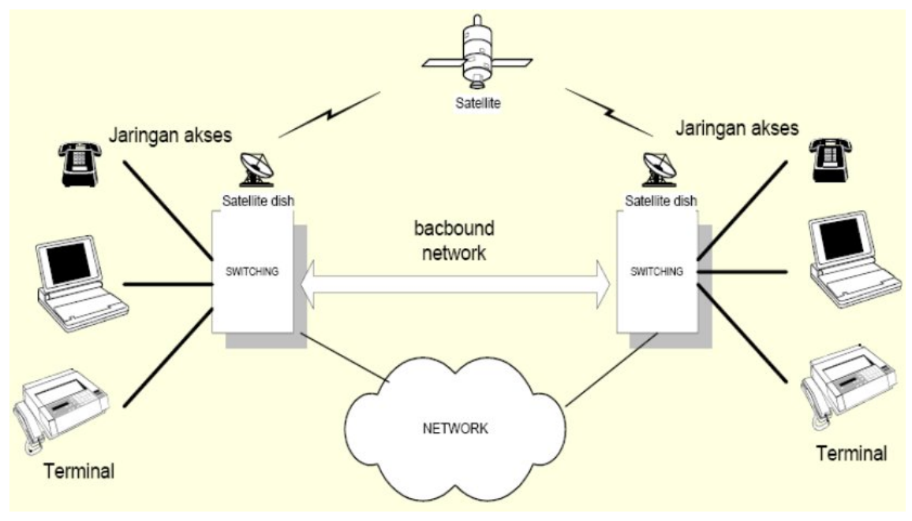

Jaringan telekomunikasi adalah jaringan yang menghubungkan peralatan-peralatan komunikasi yang lokasinya berjauhan. Teknologi inilah yang memungkinkan seseorang dapat mengirimkan informasi ke tempat jauh, atau menerima informasi dari tempat jauh, sehingga jarak geografis menjadi tidak berarti. Bab ini menguraikan jaringan telekomunikasi secara umum, sehingga mahasiswa mampu menjelaskan konfigurasi, komponen-komponen, dan macam-macam jaringan telekomunikasi secara umum.
Jaringan Telekomunikasi Secara Umum
Jaringan dalam sistem telekomunikasi adalah setiap perangkat dan media (yang saling berhubungan) yang berfungsi untuk menyalurkan komunikasi yang berlangsung antara dua tempat atau lebih. Contohnya sederhana
Gambar 1. Saluran Transmisi
Jaringan ini biasanya terbuat dari bahan logam berupa kawat atau kabel yang direntangkan antara kedua belah pihak yang berkomunikasi. Bila A ingin berkomunikasi dengan pelanggan lain maka diperlukan jaringan lain.
Jaringan telekomunikasi secara keseluruhan adalah segenap perangkat telekomunikasi yang menghubungkan pemakainnya dengan pemakai lain, sehingga kedua pemakai tersebut dapat saling bertukar informasi (baik suara, data maupun gambar).
Gambar 2. Jaringan Telekomnunikasi secara keseluruhan
Komponen Pembentuk Jaringan Telekomunikasi
Secara garis besar jaringan telekomunikasi terdiri dari dua ruas yaitu :
ruas antara terminal dan switching, ruas ini disebut dengan access network atau jaringan akses
ruas antara switching dan switching, ruas ini disebut dengan backbound network

Gambar 3. Komponen pembentuk jaringan telekomunikasi
Perangkat terminal
Terminal adalah peralatan yang bertugas merubah sinyal informasi asli ( suara manusia, gambar atau lainnya) menjadi sinyal elektrik atau elektromagnetik atau cahaya.Hal Ini diperlukan karena perangkat transmisi yang mampu menyampaikan informasi tersebut dari satu tempat ke tempat lain yang umumnya tidak dekat dalam waktu cepat memang mensyaratkan agar sinyal informasi diubah menjadi sinyal listrik ( untuk dilewatkan kabel) atau menjadi sinyal elektromagnetik (untuk dilewatkan udara) atau menjadi sinyal cahaya ( untuk dilewatkan serat optic).
Gambar 4. Contoh perangkat terminal
Perangkat transmisi
Perangkat transmisi bertugas menyampaikan informasi dari satu tempat ke tempat lain. Media transmisi bisa berupa kabel, serat optic, maupun udara bergantung jarak dari tempat-tempat yang akan dihubungkan dan banyaknya tempat yang akan dihubungkan.
Kabel Tembaga
Kabel tembaga adalah pasangan kabel yang dipakai untuk menghantar informasi dari pelanggan ke sentral.
Umumnya frekuensi yang digunakan adalah frekuensi pembicaraan ( 0 – 4 KHz), karena sinyal yang digunakan adalah sinyal AC dan DC maka karakteristik dominan yang diperhatikan adalah redaman kabel dan perubahan fasa terhadap frekuensi.
Gambar 5. Kabel Tembaga
Kabel Koaksial
Kabel koaaksial adalah kabel yang terdiri satu kawat inti ditengah yang dibungkus secara berlapis oleh plastik, kawat screen, plastik,aluminium foil dan terakhir adalah lapisan plastik lagi (polyethilene).
Contohnya adalah kabel antena TV. Kabel koaksial redamannya jauh lebih kecil dibandingkan dengan kabel tembaga biasa. Kabel ini digunakan untuk gelombang yang membawa kanal multipleks yang besar.
Gambar 6. Kabel koaksial
Serat Optik
Kabel serat optik adalah kabel yang intinya terbuat dari serat kaca atau bahan plastic yang kualitas atau kemurnian tinggi sehingga mampu melewatkan cahaya. Untuk kaca biasanya digunakan kaca silica. Kabel serat optic biasanya digunakan untuk hubungan yang jarak jauh dan kabel laut, untuk hubungan local biasanya digunakan untuk membawa sinyal informasi multimedia.
Gambar 7. Kabel Serat Optik Gambar 8. Sejarah Kabel Bawah Laut Gambar 9. Jaringan Kabel Bawah Laut Gambar 10. Jaringan Kabel Bawah Laut Indonesia
Transmisi Radio
Penggunaan frekuensi radio sangat bergantung pada tujuan dan sifat apilkasinya. Yang dijadikan sebagai bahan pertimbangan adalah jarak, iklim, kodisi kontur/lapangan dan kapasitas kanal.
Transmisi radio terrestrial
Gelombang radio yang termasuk dalam kelompok ini merambat tidak jauh atau sejajar permukaan bumi.
Gambar 11. Transmisi Radio Terrestial
Transmisi Radio Satelit
Transmisi radio yang menggunakan satelit sebagai pengulang atau repeater. Biasanya digunakan untuk trasmisi jarak jauh dan daerah-daerah yang sulit dijangkau dengan menggunakan transmisi radio terrestrial.
Gambar 12. Transmisi Radio satelit
Perangkat switching
Perangkat penyambungan bertugas agar pemakai dapat menghubungi pemakai lain seperti yang diinginkan. Perangkat switching dilengkapi dengan peralatan-peralatan yang melakukan fungsi pengontrolan, penyambungan maupun pengebelan.
Peralatan control berfungsi untuk penyelenggaraan, pengendalian dan pembangunan hubungan pada peralatan penyambungan.
Peralatan penyambungan untuk menentukan arah hubungan, peralatan penyambungan ini mampu menganalisa informasi yang diterimanya dari pemanggil.
Peralatan pengebelan berperan untuk memberikan informasi kepada pelanggan berupanada-nada tertentu, yaitu nada pilih, nada panggil maupuin nada sibuk.
Bentuk Konfigurasi Jaringan
Jaringan Mata Jala
Jaringan mata jala adalah jaringan yang menghubungkan antara satu titik dengan titik lain tanpa melalui satu titik pusat. Bila jumlah sentral sama dengan S dan jumlah saluran yang dibutuhkan adalah N maka dapat dirumuskan:
Bila salah satu saluran penghubung terganggu, maka hubungan antar sentral masih tetap dapat dilakukan melalui saluran yang lain.
Kerugian jaringan mata jala
Efisiensi saluran rendah karena memerlukan banyak berkas
Konsentrasi saluran agak rendah
Jaringan mata jala yang satu dengan yang lain sulit dihubungkan
Jaringan Bintang
Pada sistem yang menggunakan jaringan bintang akan terdapaat satu sentral utama/host/tandem berfungsi sebagai sentral transit yang menghubungkan semua sentral yang terhubung kepadanya.
Gambar 14. Jaringan Bintang
Sifat-sifat jaringan Bintang
Cocok untuk jaringan dengan volume trafik yang rendah
Trafik ke sentral lain (antar sentral) dari suatu sentral dikonsentrasikan melalui sentral transit, sehingga sentral transit biasanya mempunyai derajat yang lebih tinggi.
Jumlah berkas saluran S linear terhadap jumlah sentral N atau S = N-1 Contoh : N = 5 sentral maka S = 5 – 1 = 4 saluran
Konsentrasi saluran besar
Efisiensi saluran tinggi
Kelemahan jaringan bintang Bila sentral transit mengalami gangguan (break down) maka semua sentral di bawahnya akan terisolir (tidak dapat saling berhubungan)
Jaringan kombinasi
Bentuk jaringan digunakan dengan tujuan mengambil sifat-sifat baik dari dua jenis jaringan yang ada.
Gambar 15. Jaringan kombinasi
Keuntungan Jaringan Kombinasi
Penggunaan Saluran lebih efisien
Trafik yang kecil dilewatkan melalui link tandem, sedangkan trafik yang besar dilewatkan melalui link langsung (direct link)
Memungkinkan menggunakan rute alternative untuk trafik limpahan dari rute langsung.
Kelemahan Jaringan Kombinasi
Perangkat sentral menjadi lebih kompleks sehingga harganya menjadi lebih mahal.
Perangkat sentral menjadi lebih kompleks sehingga harganya menjadi lebih mahal.
Jaringan Cincin
Dalam topologi cincin, setiap titik dihubungkan langsung hanya pada dua titik yang tetangga yang berdekatan.
Jika satu titik ingin mengirimkan informasi pada node lain dalam cincin, titik tersebut harus melewati beberapa titik lainnya yang bertindak sebagai repeater dan mengirimkan kembali informasi pada saluran outgoing.
Gambar 16. Jaringan cincin
Keuntungan
Suatu jaringan cincin mudah sekali di konfigurasi dan diinstall.
Dalam jaringan secara normal sinyal disirkulasikan setiap waktu. Bila node tidak menerima sinyal untuk waktu tertentu menunjukan adanya kesalahan sederhana pada cincin tersebut. Bila ada node yang mengalami kerusakan maka dengan mudah dapat diisolasi sehingga tidak menggangu pada kinerja sistem secara keseluruhan.
Kelemahan
Bila satu titik tidak berfungsi maka seluruh jaringan tidak akan berfungsi. Untuk menghindari kelemahan tersebut biasanya menggunakan cincin ganda.
Bila satu titik tidak berfungsi maka seluruh jaringan tidak akan berfungsi. Untuk menghindari kelemahan tersebut biasanya menggunakan cincin ganda.
Jaringan Bus
Topologi bus menggunakan filosofi multipoint (broadcast). Dalam hal ini sebuah kabel panjang di sebut bus membentuk backbone pada seluruh titik
Jika satu titik menginginkan untuk mengirim data ke beberapa titik maka titik memasukan data tersebut pada bus yang akan membawa data tersebut ke node lainnya melalui jalur bus yang ada.
Gambar 17. Jaringan bus
Keuntungan
mudah untuk diinstal
menggunakan panjang kabel yang lebih pendek dibandingkan topologi lainnya.
Kelemahan
Topologi ini tidak flesibel karena penambahan satu titik menyebabkan perubahan konfigurasi dan penambahan pajang rata-rata kabel.
Pengisolasian kerusakan sangat sulit dilaksanakan karena akan menganggu kinerja jaringan.
Bila bus mengalami kerusakan maka seluruh titik tidak berfungsi.
Jaringan Pohon
Jaringan pohon dapat diturukan dari topologi bintang yang berirarki membentuk sebuah percabangan pohon, hanya beberapa node yang langsung berhubungan dengan sentral pusat.
Sentral pusat berisi repater yang menerima sinyal informasi yang masuk dan meregenerate ke sentral dibawahnya yang dituju.
Sentral pusat merupakan sentral yang aktif sementara sentral dibawahnya adalah sentral yang pasif.
Kelebihan dan kelemahannya sama dengan topologi jaringan bintang
Gambar 18. Jaringan pohon
Hirarki Jaringan
Pada suatu Negara yang mempunyai wilayah geografis yang luas, jika jaringan telekomunikasinya hanya terdiri dari sentral local dan tandem saja akan menjadi rumit dan mahal.
Pembangunan hubungan panggilan akan memakan waktu yang lama dan kemungkinan gagal menjadi tinggi.
Pemakaian peralatan sentral selama pendudukan panggilan menjadi tidak efisien, karena banyak sentral transit yang dilaluinya. Hal ini dapat diatasi dengan menggunakan sesedikit mungkin sentral perantara dengan menggunakan jaringan berhirarki untuk memudahkan strategi ruting